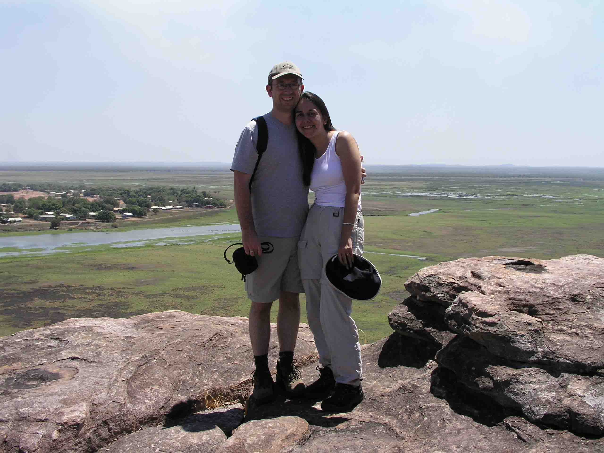
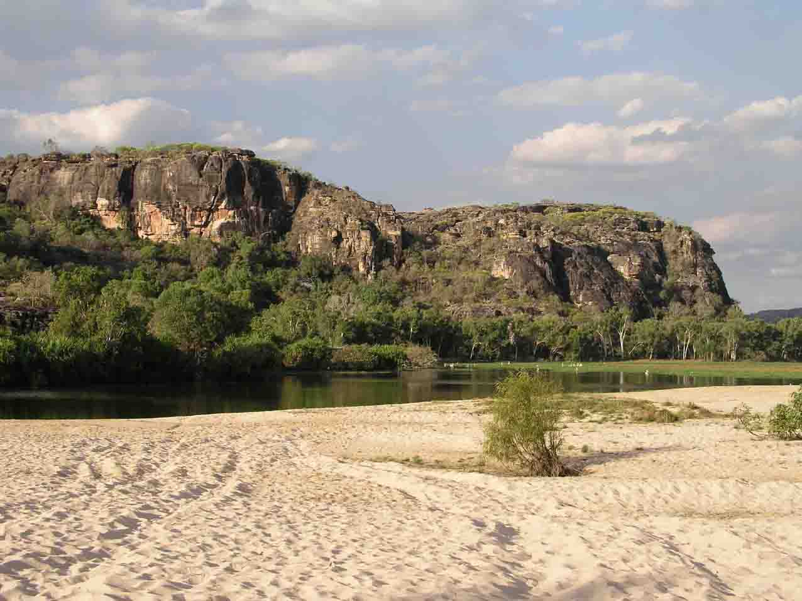
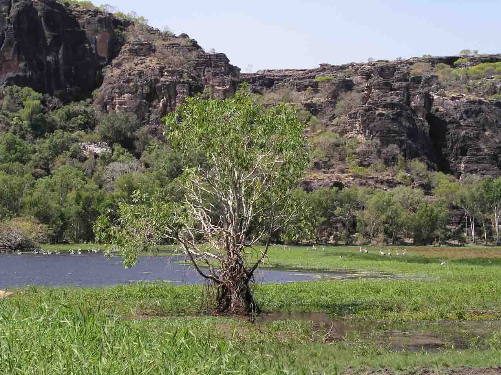
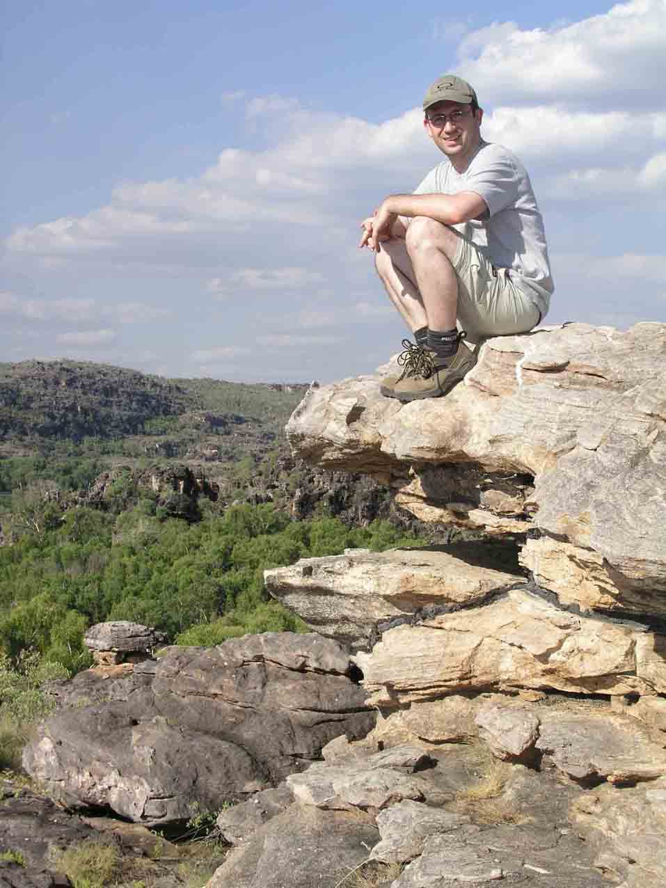
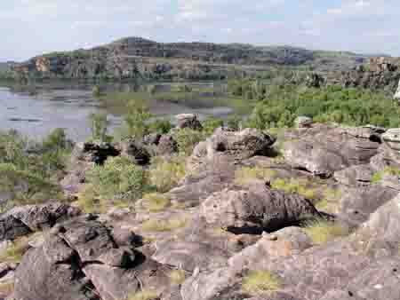

On the Road at the Top End
Darwin, Australia
We're sitting here by the pool in 32 degree heat, under the palm trees, enjoying the last couple of days of our holiday up here in the Top End of Australia. The rest by the pool is a well-deserved one because although we've had a fantastic holiday so far it has, at times, felt more like we were starring in the Japanese Endurance programme that used to feature on Clive James' show, as opposed to being on a relaxing trip away!
The holiday started in Darwin - a 4.5 hour flight from Sydney (can you believe that - 4.5 hrs in the air and we're still in the same country?!) Darwin is a very relaxed city - hardly a city at all with its population of about 100K - full of people who have chosen to move away from other parts of Aus in search of a more \"troppo\" lifestyle. It's hot (I mean, we're heading towards the end of winter and it's a chilly 32 degrees!), it's humid, teeming with parrots and cockatoos and chock full of palm trees! A great spot to head to if you need to just chill out. And, wherever you head you'll either hear Bob Marley or Bread tracks wafting out or even up-beat didgerydoo music. As you may have guessed already we're both quite taken by Darwin, but living up here would be out of the question as the summer means mid-30s everyday and 95% humidity.
From Darwin we headed out to Kakadu National Park - a world heritage site - and rightfully so as it was full of magnificent landscapes. It really was quite far from what we'd imagine the Top End to look like. I guess after visiting Uluru and King's Canyon we'd incorrectly thought that the whole of the Northern Territiory would be dry - with arid landscapes - and eucalyptus trees dotted around the place. Kakadu most certainly proved us wrong. Even though it is the dry season up here there is still quite a lot of water around, although it is much more concentrated and therefore spotting wildlife is easier as the birds, crocs and wallabies tend to congregate around the billabongs. It is also still very green - a lush, rich green. Just beautiful.
Our most memorable trip of the holiday and also one of the most memorable of our entire time in Aus was out to Arnhemland with Lord's Safaris. It was touted as a culteral tour and I must say that we both tend to shy away from these sort of trips as they usually involve people either being paraded in front of you (\"Here, see a real Aborigine\") or else you arrive in the town and are told how lucky you are because today a very special festival is taking place (the same very special, authentic festival that takes places everyday for the hoards!!) But, this tour was actually very different and enabled us to learn a good few things whilst also benefiting the community we visited. Our guide, Anthony, dropped us off at Oenpelli where we picked up our local guide, Thompson, who took us up Injalak Hill. Here began Japanese Endurance as we scrambled up the very rocky hill, past incedible rock paintings which it is estimated may be as old as 25K years old! I think we were all expecting Thompson to tell us some incedibly complicated Dreamtime story as we looked at the cave covered in paintings of fish, snakes, iguanas and kangaroos. \"This cave,\" he said, \"shows you the things these fellas ate.\" Which I guessed was all that was needed in explanation! There were also paintings of stories and \"mimi spirits\" which are 'original'spirits. We were told that there are mimi spirits everywhere up the hill - and that Oenpelli Community's witchdoctor can see them but he is too aged to make it up the hill anymore.
Oenpelli Community has all the same problems that effect indigenous communities all around Aus and, sadly, the world over. Petrol sniffing is a problem amoungst the younger generation and alcohol and violence for the community as a whole. These problems are hardly surprising when you consider how few opportunities these kids are growing up with and the fact that they must be incredibly torn between the traditional ways of life that their communities still strongly adhere to and the modern images they are bombarded with everyday through the TV. But, in Oenpelli there are now opportunities being created. They have an Arts Centre where paintings are done with traditional methods, baskets woven from pandanus leaves and carvings made from native bark are made by local artists and sold to tourists and shops all over the world for the benefit of the community as a whole.
Lunch was at the sandbar billabong - an absolutley incredible spot presided over by a traditional owner called Jacob. Arnhemland is a restricted area which means you need either to obtain a permit to enter (and that doesn't allow you to enter most areas, just drive the road). Or you go with one of the very small number of tours - a traditional owner like Jacob usually only allows one company. We sat on our little chairs with the most incredibly lush billabong in front of us surrounded by rocky sandstone outcrops. The odd freshwater croc (or \"freshie's\") eyes appeared in the water whilst flamingos and magpie geese floated about on the water and whistling kites fought overhead. The most perfect of scenes.
TO BE CONTINUED......
The holiday started in Darwin - a 4.5 hour flight from Sydney (can you believe that - 4.5 hrs in the air and we're still in the same country?!) Darwin is a very relaxed city - hardly a city at all with its population of about 100K - full of people who have chosen to move away from other parts of Aus in search of a more \"troppo\" lifestyle. It's hot (I mean, we're heading towards the end of winter and it's a chilly 32 degrees!), it's humid, teeming with parrots and cockatoos and chock full of palm trees! A great spot to head to if you need to just chill out. And, wherever you head you'll either hear Bob Marley or Bread tracks wafting out or even up-beat didgerydoo music. As you may have guessed already we're both quite taken by Darwin, but living up here would be out of the question as the summer means mid-30s everyday and 95% humidity.
From Darwin we headed out to Kakadu National Park - a world heritage site - and rightfully so as it was full of magnificent landscapes. It really was quite far from what we'd imagine the Top End to look like. I guess after visiting Uluru and King's Canyon we'd incorrectly thought that the whole of the Northern Territiory would be dry - with arid landscapes - and eucalyptus trees dotted around the place. Kakadu most certainly proved us wrong. Even though it is the dry season up here there is still quite a lot of water around, although it is much more concentrated and therefore spotting wildlife is easier as the birds, crocs and wallabies tend to congregate around the billabongs. It is also still very green - a lush, rich green. Just beautiful.
Our most memorable trip of the holiday and also one of the most memorable of our entire time in Aus was out to Arnhemland with Lord's Safaris. It was touted as a culteral tour and I must say that we both tend to shy away from these sort of trips as they usually involve people either being paraded in front of you (\"Here, see a real Aborigine\") or else you arrive in the town and are told how lucky you are because today a very special festival is taking place (the same very special, authentic festival that takes places everyday for the hoards!!) But, this tour was actually very different and enabled us to learn a good few things whilst also benefiting the community we visited. Our guide, Anthony, dropped us off at Oenpelli where we picked up our local guide, Thompson, who took us up Injalak Hill. Here began Japanese Endurance as we scrambled up the very rocky hill, past incedible rock paintings which it is estimated may be as old as 25K years old! I think we were all expecting Thompson to tell us some incedibly complicated Dreamtime story as we looked at the cave covered in paintings of fish, snakes, iguanas and kangaroos. \"This cave,\" he said, \"shows you the things these fellas ate.\" Which I guessed was all that was needed in explanation! There were also paintings of stories and \"mimi spirits\" which are 'original'spirits. We were told that there are mimi spirits everywhere up the hill - and that Oenpelli Community's witchdoctor can see them but he is too aged to make it up the hill anymore.
Oenpelli Community has all the same problems that effect indigenous communities all around Aus and, sadly, the world over. Petrol sniffing is a problem amoungst the younger generation and alcohol and violence for the community as a whole. These problems are hardly surprising when you consider how few opportunities these kids are growing up with and the fact that they must be incredibly torn between the traditional ways of life that their communities still strongly adhere to and the modern images they are bombarded with everyday through the TV. But, in Oenpelli there are now opportunities being created. They have an Arts Centre where paintings are done with traditional methods, baskets woven from pandanus leaves and carvings made from native bark are made by local artists and sold to tourists and shops all over the world for the benefit of the community as a whole.
Lunch was at the sandbar billabong - an absolutley incredible spot presided over by a traditional owner called Jacob. Arnhemland is a restricted area which means you need either to obtain a permit to enter (and that doesn't allow you to enter most areas, just drive the road). Or you go with one of the very small number of tours - a traditional owner like Jacob usually only allows one company. We sat on our little chairs with the most incredibly lush billabong in front of us surrounded by rocky sandstone outcrops. The odd freshwater croc (or \"freshie's\") eyes appeared in the water whilst flamingos and magpie geese floated about on the water and whistling kites fought overhead. The most perfect of scenes.
TO BE CONTINUED......

Croc warning at Anbangbang Billabong

Nathan viewing rock paintings on Injalak Hill

25,000 year old rock paintings showing what \"...fellas ate.\

Nathan & Sue on Injalak Hill overlooking Oenpelli

View from Injalak Hill

Sandbar Billabong, Arnhemland

Sandbar Billabong No.2

Nathan on Hamish Dreaming enjoying the view!

Hamish Dreaming, Arnhemland